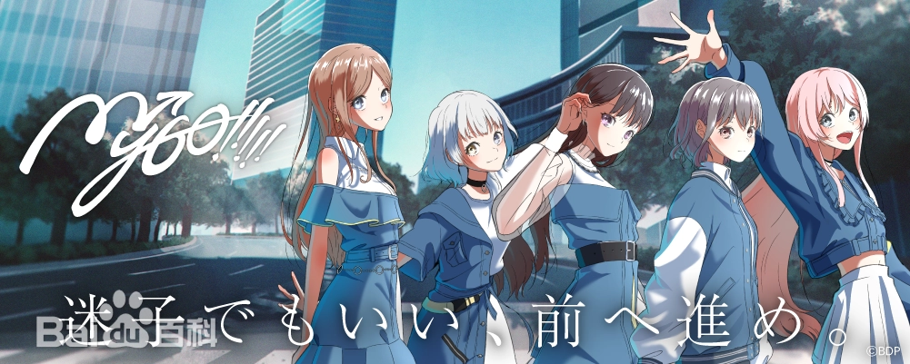
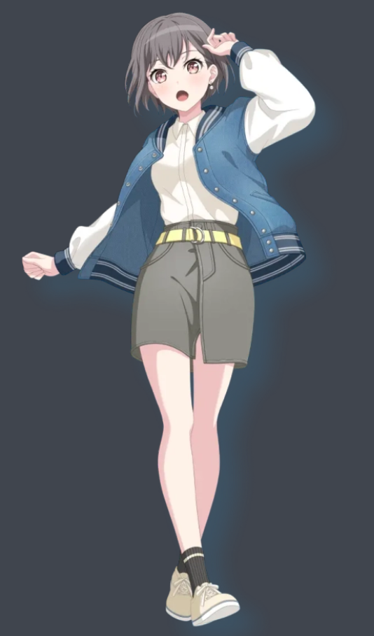
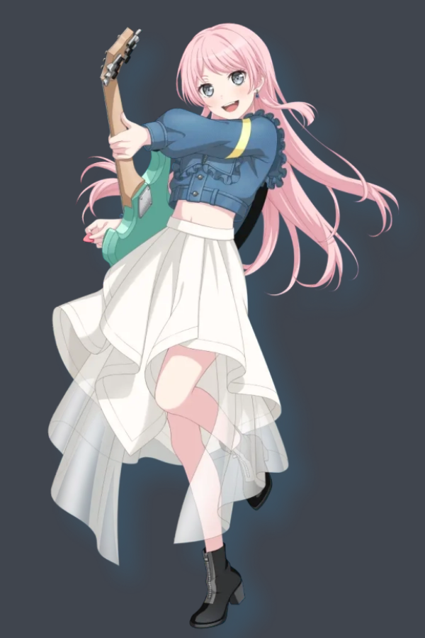
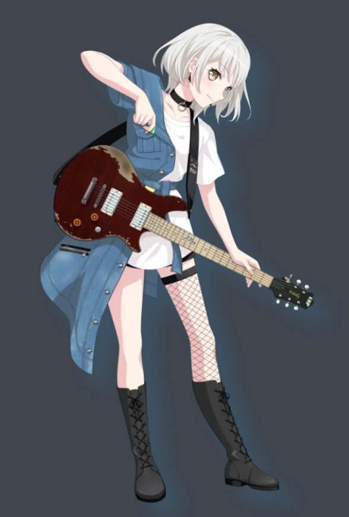
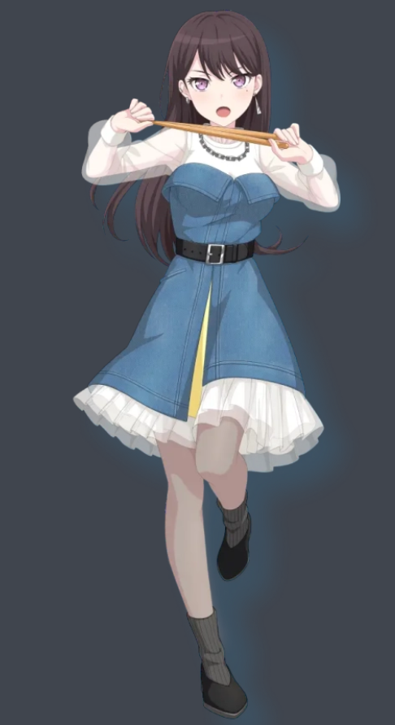
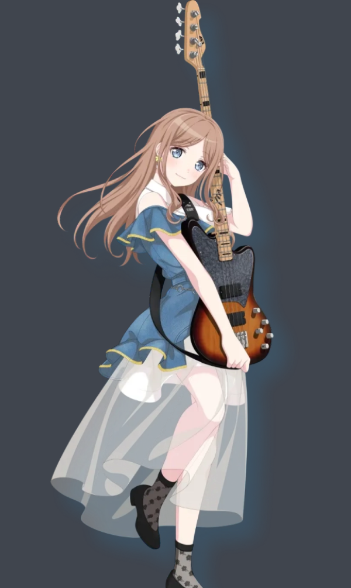

《Mygo!!!》
MyGO!!!!!是多媒体企划“BanG Dream!”中登场架空的5人女子乐队，
以及为她们配音的声优，在现实中以乐队形式真实存在的5人女子声优组合，所属唱片公司为Bushiroad Music。各位声优也在现实中使用作品角色相同的乐器。
即便迷茫也要继续前进，五名少女组成了乐队。初中时因为乐队解散而远离了音乐的灯，
因为与爱音的相遇而再次开始了乐队活动。成员们的个性各不相同，也经常产生摩擦。
但是，她们都想站在舞台上。即便思念得不到回应，即便寻找不到答案，
迷路的少女们也仍会不断前进


高松灯
羽丘女子学园高中一年级学生，天文部唯一社员。先后担任过CRYCHIC和MyGO!!!!!的主唱。
家住在月之森女子学园附近。
性格略悲观的女孩。感情细腻，有着自己独特的内心世界。容易感到寂寞，常会称自己“感受着孤独”。对人际关系极为敏感，时刻担心着自己的言行是否会产生不良影响。
点我了解更多小灯

千早爱音
MyGO!!!!!的吉他手，羽丘女子学园高中一年级学生。
成绩优秀，精力充沛，品学兼优的优等生，且具备相当的交流力和行动力，初中时代就在班里极具人气，并且担任学生会长。
虽然有点爱慕虚荣和想出风头，但个性积极善良，关心他人，心思细腻。
喜欢赶时髦所以常常会忍不住入手流行的东西。
喜欢的食物是熏三文鱼和水果三明治。讨厌的食物是梅干和其他比较酸的东西。
初中时虽有过弹吉他的经验，但技术和经验稍显稚嫩，目前正在努力练习中。
负责乐队的社交账号运营以及服装设计。
点我了解更多阿侬

要乐奈
MyGO!!!!!的吉他手，花咲川女子学园初中三年级学生，
在LiveHose「RiNG」里神出鬼没的古怪女孩，因为觉得乐队很有趣所以加入了乐队。
喜欢的食物是抹茶和荞麦面，不喜欢韭菜和山药泥。
点我了解更多豪猫

椎名立希
MyGO!!!!!的鼓手，同时也负责作曲，在拿到灯的歌词以后，创作出切合她世界观的歌曲。
花咲川女子学园高中一年级学生，和八幡海铃、三角初华同一个班级。是喜欢一人独处的独狼。
个性认真，不苟言笑，言辞犀利，态度上无论是待人还是待己（除了灯）都非常严格。习惯性背负着一切，主导着乐队的各项事务
点我了解更多立希

长崎素世
月之森女子学园高中一年级学生，在吹奏乐部司职低音提琴，
并先后担任过乐队CRYCHIC和MyGO!!!!!的贝斯手。弹贝斯时CRYCHIC时期使用指弹，MyGO!!!!!时期使用拨片弹奏。
如同具有安稳气氛的大姐姐一般的存在，无论对谁都温柔以待，经常被周围的人所依赖。虽然经常营造和谐的氛围，但从未走进过队友的内心，无法解决队友遭遇的问题。
点我了解更多长期素食